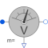

VoltageSensorMultiphase voltage sensor |

|
Diagram
{kind=link}
Information
This information is part of the Modelica Standard Library maintained by the Modelica Association.
Contains m voltage sensors (Modelica.Electrical.Analog.Sensors.VoltageSensor), thus measuring the m potential differences v[m] between the m pins of plug_p and plug_n.
Connectors (3)
| plug_p |
Type: PositivePlug |
|
|---|---|---|
| plug_n |
Type: NegativePlug |
|
| v |
Type: RealOutput[m] Description: Voltage between pin p and n (= p.v - n.v) as output signal |
Components (1)
| voltageSensor |
Type: VoltageSensor[m] |
|---|
Used in Examples (2)
|
Modelica.Electrical.PowerConverters.Examples.DCAC.MultiPhaseTwoLevel Multi phase DC to AC converter with R load |
|
|
Modelica.Electrical.PowerConverters.Examples.DCAC.MultiPhaseTwoLevel Multi phase DC to AC converter with R-L load |
Used in Components (5)
|
Modelica.Electrical.Machines.Sensors Length of space phasor -> RMS voltage |
|
|
Modelica.Electrical.Machines.Sensors Rotor lagging angle |
|
|
Modelica.Electrical.MultiPhase.Sensors Continuous quasi voltage RMS sensor for multi phase system |
|
|
Modelica.Electrical.MultiPhase.Sensors Multiphase instantaneous power sensor |
|
|
Modelica.Electrical.PowerConverters.ACDC.Control Control of 2*m pulse bridge rectifier |